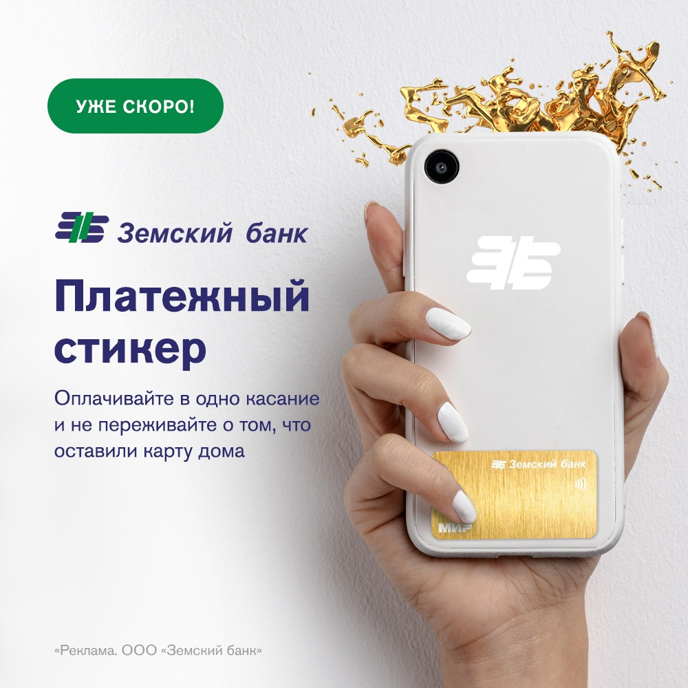

Новый платежный стикер от Земского банка!

Уже скоро Вы сможете приобрести платежный стикер в нашем банке. Стикер - это платежная карта, которая имеет клейкую обратную сторону со встроенным чипом бесконтактной оплаты.
Платежный стикер имеет все основные преимущества классической карты Мир от Земского банка:
- кешбэк либо процент на остаток на выбор;
- бесплатные уведомления и бесплатные переводы;
- cнятие наличных без комиссии;
Стикер меньше обычной карты, и его можно наклеить на смартфон или чехол. Стикер от Земского банка дает возможность оплачивать покупки телефоном везде, где есть терминал для оплаты. Стикером можно пользоваться, даже когда Ваш телефон выключен или разряжен.
В платежный стикер встроен NFC-чип, поэтому для корректной работы его нужно наклеить на обратную сторону телефона в самую нижнюю часть. Это необходимо для того, чтобы не возникал конфликт с чипом оплаты смартфона.
Приклеить платежный стикер возможно на сам смартфон, а также вложить под чехол. Но следует учитывать, что чехол может выступать механическим препятствием для считывания и также снижать качество передачи сигнала. Если чехол плотный, лучше наклеить стикер прямо на него.
Вы можете наклеить стикер не только на телефон, но и на любой предмет, который удобно использовать для оплаты покупок.
Также с помощью платежного стикера возможно снять деньги в банкомате, в случае если банкомат поддерживает опцию бесконтактного снятия. Необходимо приложить платежный стикер к полю для бесконтактных операций.